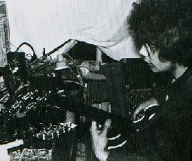

http://www.emf.org/subscribers/curtin/
sdcurtin@monmouth.com
Steven Curtin was born April 23, 1960 in Madison, Wisconsin. He received an MFA
in Electronic Music and the Recording Media in 1989 from the Mills College Center
for Contemporary Music. Since the mid 1970's he has been building and playing
guitars and electronic music instruments. He is an Audio Applications Engineer
for the CD-Radio project with the Microelectronics division of Lucent
Technologies- Bell Labs Innovations in Allentown, PA. He works out of the
Holmdel, NJ Lucent building, and lives with his wife Barbara and their son in the
Monmouth County, NJ area.
Steven Curtin
31 Virginiana Terrace
Freehold, NJ 07728